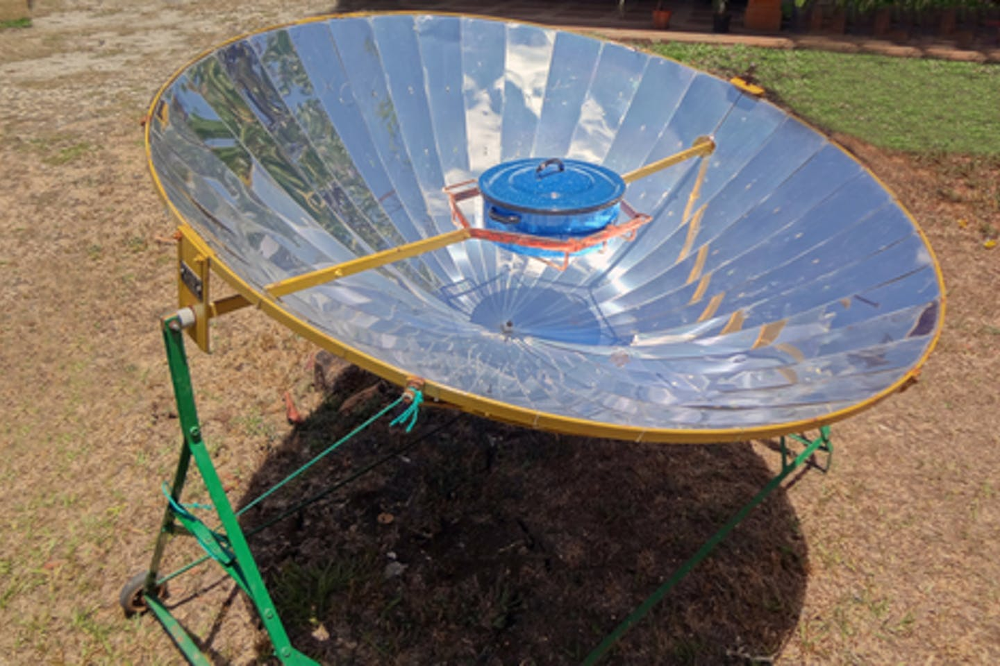

<topbar style="display:none;">
<item><a href="../index.html">Home</a></item>
<item><a href="../about.html">About</a></item>
</topbar>
<!-- This is a comment, it is ignored by the compiler/interpreter -->
## Week 1 - Precedents
There are many types of interventions which are passively powered by the environment. One example of this is the wind powered strandbeests created by Dutch inventor Theo Jansen.

We can see how the strandbeest is propelled forwards by motion about a central axis here. This gives us some early inspiration for how we might build a wind powered intervention.

Alternatively, we have some energy interventions which use solar power in a more passive manner than a traditional solar panel.
One common example of this is a solar oven, such as the one below:

Similar uses of passive solar include molten salt power plants, which heat up molten salts during the day using concentrated
beams of solar, and then use those heated molten salts at night to create steam to spin turbines.
A combination of these two results in the commonly used solar water heater, which is used around the US to provide
cheap and easy heating for homes in the winter, without need for gas.
<img src="https://upload.wikimedia.org/wikipedia/commons/2/24/Termo_solar.png" alt="solar heater" width="100"/>
Another use of solar is the more common solar panels coating a roof to generate electricity that can be stored in batteries later.
The use of solar panels in conjunction with a passive solar system, that could be switched over to being electrically powered at night
could allow a solar powered intervention to still be powered into the evening, once the peak hours for solar heating have passed.
Precedent websites:
* <a href="https://inhabitat.com/worlds-first-molten-salt-solar-plant-produces-power-at-night/">Molten Salt Power Plant</a>
* <a href="https://www.energy.gov/energysaver/solar-water-heaters">Solar Water Heater</a>
* <a href="https://www.energy.gov/eere/solar/photovoltaics">Photovoltaics</a>